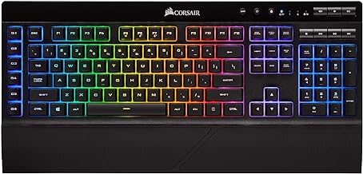
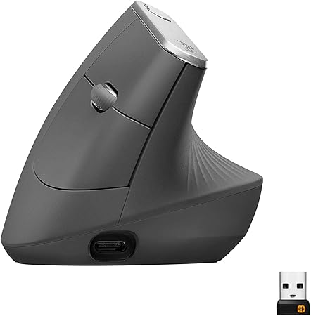

CORSAIR Teclado inalámbrico para juegos K57 RGB – Tiempo de respuesta <1 ms con Slipstream Wireless – Conecta con dongle USB, Bluetooth o cable – Teclas RGB retroiluminadas individualmente, negro
$109.99
Conéctese con Bluetooth inalámbrico de baja latencia o USB con cable Hiperrápido de 1 ms Slipstream Ilumina en cualquier lugar con retroiluminación RGB dinámica por tecla de LED capellix que brillan más y consumen mucha menos energía que los LED RGB convencionales Seis teclas de macro programables te dan la ventaja en el juego de macros potentes o remapas clave Un reposamanos de goma suave desmontable reduce el estrés en tus muñecas para que puedas jugar más tiempo con comodidad Los controles dedicados de volumen y multimedia te dan control directo sobre tu audio sin tener que interrumpir tu juego.
Productos Relacionados

Glorious Gaming - Teclado mecánico personalizado para juegos GMMK 3 con perilla
$109.99

HYTE Y60 - Carcasa para juegos de computadora ATX de cristal templado panorámico de doble cámara
$219.95

Logitech MX - mouse inalámbrico vertical – diseño ergonómico avanzado
$75.00